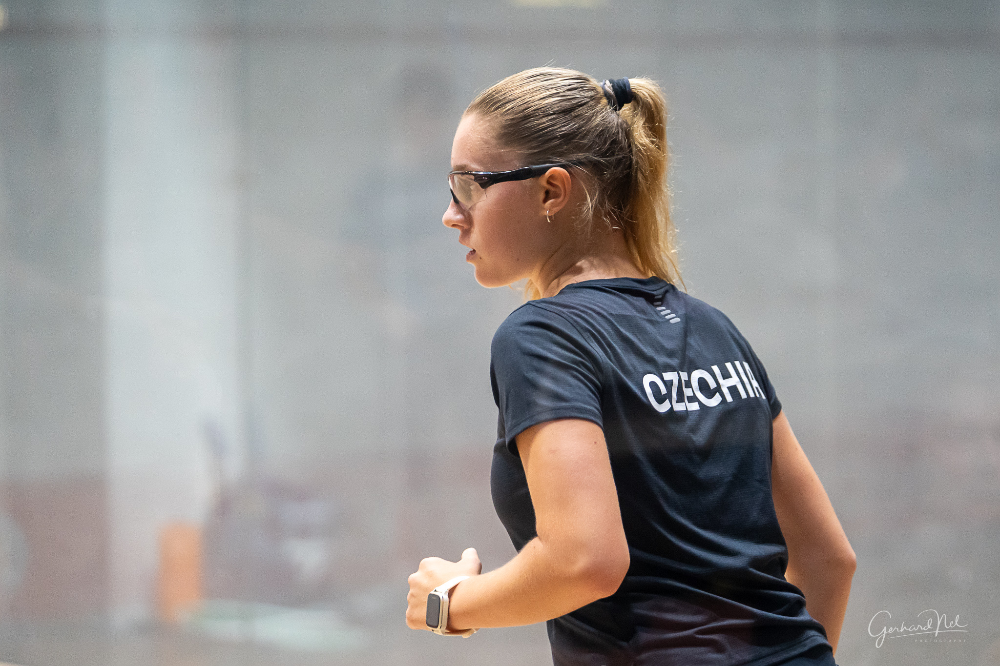
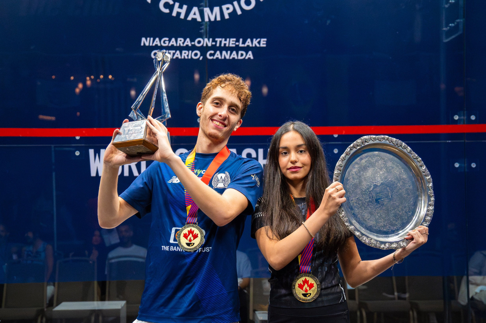

naPočkání.com Masters HAMR
Masters
Turnaje a soutěže · 05. 10. 2026
Do Hradce Králové přijelo 131 juniorů a juniorek. První říjnový víkend patřil deseti kategoriím od U11 do U19.
Reprezentace · 31. 03. 2026
Individuální mistrovství Evropy v Krakově zakončili naši hráči vítězně, Anetka I Ella porazily své protihráčky, Vojtovi soupeř skrečoval.
ČASQ · 27. 07. 2026
Podpora Nadace ČEZ pomohla v sezoně 2025/2026 financovat trenéry mládeže v lokálních sportovních centrech mládeže.
Turnaje a soutěže · 05. 10. 2026
Hradec Králové přivítal o prvním říjnovém víkendu 131 mladých hráčů a hráček. O výsledky bojovali v deseti kategoriích od U11 do U19.

Turnaje a soutěže · 30. 09. 2026
Tamara Holzbauerová nastoupila na turnaji World Tour v São Paulu. V úvodním kole získala zkušenost proti Australance Madison Lyon.

ČASQ · 27. 07. 2026
Finanční příspěvek Nadace ČEZ umožnil uhradit velkou většinu podpory trenérů mládeže v celé sezoně 2025/2026. Za štědrou podporu děkujeme a věříme, že spolupráce bude pokračovat i v nadcházející sezoně.

Reprezentace · 26. 07. 2026
Juniorské mistrovství světa v Kanadě vyvrcholilo finálovými zápasy. Z titulů se radují Indka Anahat Singh a Egypťan Mohamed Zakaria, kteří potvrdili roli favoritů turnaje.

ČASQ · 06. 07. 2026
Projekt podpory trenérů mládeže LSCM bude v sezoně 2026/2027 pokračovat v nezměněné podobě. Vybraní trenéři budou opět dostávat pravidelnou měsíční podporu.

Reprezentace · 05. 07. 2026
Medaile z Dutch Junior Open nakonec těsně unikla. Honza Jašek po výborných výkonech obsadil v silné mezinárodní konkurenci čtvrté místo.